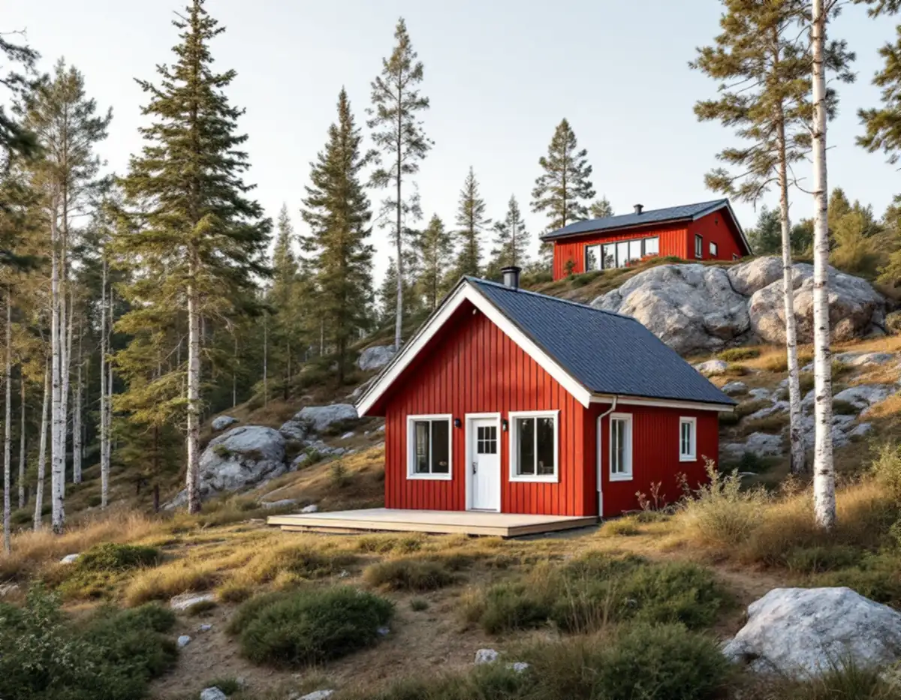
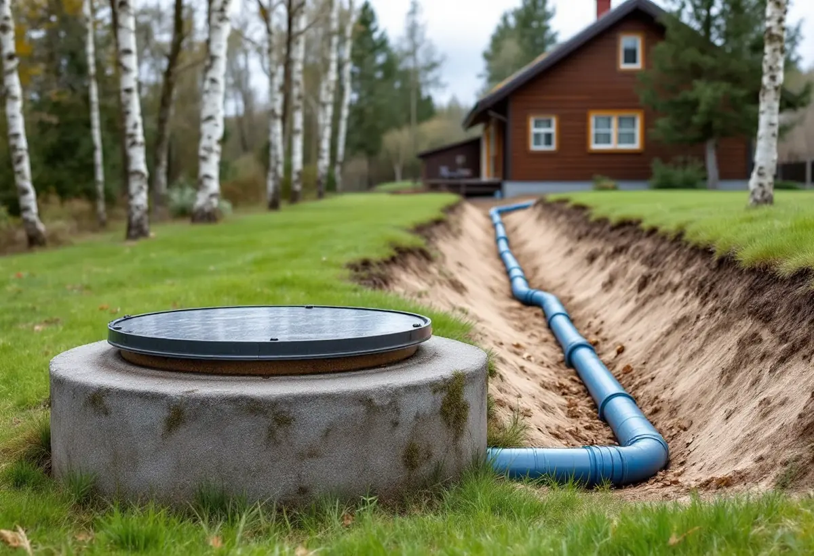
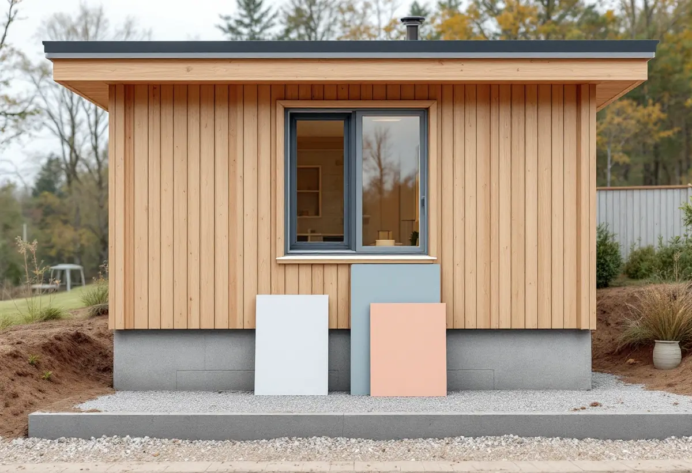

Vatten först
Kommunalt VA, enskilt avlopp eller egen brunn – vi utgår från vad tomten har.
Ett komplementbostadshus i Huddinge kan byggas utan bygglov om vissa krav uppfylls, men det behöver vatten, och där skiljer sig en tomt med kommunalt VA från en tomt med egen brunn och eget avlopp. Geal Entreprenad AB bygger husen nyckelfärdigt och planerar vattnet och avloppet innan grunden läggs.

Huddinge kommun skriver att Stockholm Vatten och Avfall ansvarar för det kommunala spillvattennätet i Huddinge, och att anslutningen av ett attefallshus eller en komplementbyggnad ska anmälas dit. Det ansvaret ligger på byggherren. Till kommunen gör du dessutom en anmälan om installationen, och du väntar på startbesked innan rören dras. Samma sak gäller om huset får eldstad eller en anordning för ventilation (plan- och byggförordningen 6 kap. 1 §).
För VA-anmälan räknar kommunen upp en situationsplan på tomtkarta, där du markerar vilken byggnad ändringen gäller om det finns flera på tomten, en planritning när ändringen sker inne i en byggnad och ett förslag till kontrollplan. Tomtkartan kan skrivas ut gratis från kommunen. Vi ritar in husets ledningar fram till villans befintliga, så att samma underlag kan användas i båda anmälningarna.

När fler bor på tomten ökar belastningen på avloppet. Huddinge kommun skriver att avloppsanordningen behöver vara dimensionerad för den nya belastning som kan uppstå när ett attefallshus eller en komplementbostad byggs. Enligt kommunens lokala föreskrifter krävs tillstånd för att ansluta en vattentoalett till en befintlig avloppsanordning och för att ändra anordningen, om åtgärden kan medföra en väsentlig ändring av avloppsvattnets mängd eller sammansättning.
Ansökan görs hos kommunens miljötillsynsavdelning. Kommunen ber dig sedan lämna in avloppstillståndet samtidigt som du gör anmälan om att bygga komplementbostadshuset. En avgift tas ut för att ansluta vattentoalett eller bad-, disk- och tvättvatten till en befintlig godkänd anordning. Ordningen påverkar tidplanen, så vi tar fram underlaget till avloppsansökan först och börjar inte med grunden förrän det är klart vart vattnet ska.
Får fastigheten sitt dricksvatten från en egen brunn ska det enligt kommunen framgå av anmälan om komplementbostadshuset. Att det finns tillräckligt med vatten och att kvaliteten är bra är fastighetsägarens ansvar. Kommunen skriver också att det följer vissa krav när en dricksvattenanläggning försörjer flera hushåll eller när huset ska hyras ut, vilket är just läget när ett attefallshus blir en egen bostad.
För att borra eller gräva en ny brunn krävs inget tillstånd från kommunen. Det finns inget krav på vattenprov, men Livsmedelsverket rekommenderar prov vart tredje år, och kommunen råder dig att anlita ett ackrediterat laboratorium. Svaret bedöms som tjänligt, tjänligt med anmärkning eller otjänligt. Omfattas fastigheten av strandskydd söker du dispens hos samma miljötillsynsavdelning.
Kommunen listar när bygglov krävs trots att måtten hålls: närmare gränsen än 4,5 meter utan skriftligt medgivande från grannarna, närmare än 30,0 meter från ett järnvägsspårs mitt utan medgivande från infrastrukturförvaltaren, på en tomt eller i ett område med särskilda kulturhistoriska värden, och för ett komplementbostadshus i ett riksintresse för totalförsvaret när det gäller flygplatser eller övnings- och skjutfält.
Då vill kommunen normalt ha en situationsplan på förenklad nybyggnadskarta, fasadritningar med marklinjer, plan- och sektionsritningar, en kulör- och materialbeskrivning där färgen anges med NCS-kod och ett förslag till kontrollplan. Ändras marken mer än lite visas det på situationsplanen eller på en separat markplaneringsritning. Förråd och gäststugor beskrivs under snickare i Huddinge, och den som hellre bygger ihop ytan med villan läser om tillbyggnad i Huddinge.

Kommunalt VA, enskilt avlopp eller egen brunn – vi utgår från vad tomten har.
Avloppstillstånd och vid behov strandskyddsdispens hos miljötillsynen.
Byggnadsnämnden och Stockholm Vatten och Avfall, med samma ledningsritning.
Arbetet med installationerna börjar när beskedet har kommit.
Grund, stomme, tak, installationer och ytskikt – nyckelfärdigt.
Genomgång av huset och de handlingar du ska spara.
Skatteverket godkänner rotavdrag för en tillbyggnad med gäststuga om någon av tillbyggnadens sidor sitter ihop med husets yttervägg till minst 75 procent eller om det finns en dörr emellan. Ett komplementbostadshus står fritt på tomten, och att bygga ett helt nytt hus eller en liknande fristående byggnad ger inget avdrag. Kostnadsförslaget för attefallshuset är därför utan rotavdrag.
Storlek och planlösning, kök och badrum, grund på berg eller lera, avståndet till befintliga ledningar och om avloppet behöver byggas om för fler boende. Efter ett kostnadsfritt platsbesök får du ett skriftligt kostnadsförslag.
Komplementbostadshus på tomten.
Attefallshus →Takbyte, takbesiktning och plåtarbeten.
Takläggare i Huddinge →Stuvsta, Snättringe och Skogås.
Takrenovering i Huddinge →Egnahem, grupphus och permanentade stugor.
Badrumsrenovering i Huddinge →Grannar, tomtgräns och lovärendet.
Byggföretag i Huddinge →Nytt trä i en gammal fasad.
Fasadmålning i Huddinge →Villor, grupphus och fritidshus i Huddinge.
Fasadrenovering i Huddinge →Egnahem, grupphus och 70-talsvillor.
Fönsterbyte i Huddinge →Okopplade bågar, tätning och lagning av bottenstycken.
Fönsterrenovering i Huddinge →Grupphus, radhus och kedjehus i Huddinge.
Golvläggare i Huddinge →Slipa golvet och byt ytbehandling.
Golvslipning i Huddinge →Grupphus, egnahem och stugor.
Köksrenovering i Huddinge →Fasad, fönster och rum i Huddinge.
Målare i Huddinge →Rännor, dagvatten och brutna tak.
Plåtslagare i Huddinge →Altaner, förråd och gäststugor.
Snickare i Huddinge →Tyngre tak, stugor och landsbygd.
Takbyte i Huddinge →Ny tapet på lagad spännpapp.
Tapetsering i Huddinge →Råd för tre epoker av småhus.
Tillbyggnad i Huddinge →Rekordårens hus inifrån och ut.
Totalrenovering i Huddinge →